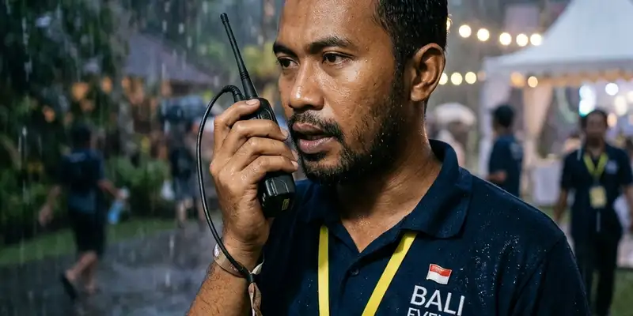

Rencana anggaran biaya atau RAB corporate gathering adalah dokumen yang merinci seluruh estimasi biaya kegiatan, mulai dari transportasi hingga dokumentasi, sebagai dasar pengajuan anggaran kepada atasan.
Ringkasan Inti
- RAB corporate gathering sebaiknya disusun per pos biaya agar mudah dievaluasi.
- Format RAB yang baik mencantumkan volume, harga satuan, dan total biaya.
- Proposal anggaran perlu disertai tujuan kegiatan dan manfaat yang diharapkan.
- Menyertakan penawaran vendor memperkuat kredibilitas RAB yang diajukan.
- RAB yang rapi mempercepat proses review dan persetujuan oleh atasan.
Secara umum, format RAB dapat disesuaikan dengan kebijakan internal masing-masing perusahaan, namun prinsip dasarnya tetap sama, yaitu mencantumkan rincian biaya secara transparan agar mudah dipahami oleh pihak yang memberikan persetujuan anggaran.
Bagaimana Format RAB Corporate Gathering yang Umum Digunakan?
Format RAB corporate gathering yang umum digunakan terdiri dari kolom nama pos biaya, volume atau jumlah unit, harga satuan, dan total biaya untuk setiap komponen kegiatan.
Format ini biasanya disusun dalam bentuk tabel sederhana yang memuat seluruh komponen biaya seperti transportasi, akomodasi, konsumsi, fasilitator, perlengkapan aktivitas, dokumentasi, dan dana cadangan. Setiap baris pada tabel mencerminkan satu pos biaya, sehingga total keseluruhan dapat dihitung secara otomatis dari penjumlahan setiap pos.
Format yang konsisten dan mudah dibaca akan memudahkan atasan maupun tim keuangan dalam melakukan verifikasi sebelum anggaran disetujui.
Apa Saja Pos Anggaran yang Wajib Dicantumkan dalam RAB?
Pos anggaran yang wajib dicantumkan dalam RAB corporate gathering meliputi transportasi, akomodasi, konsumsi, fasilitator outbound, perlengkapan aktivitas, dokumentasi, dan dana cadangan.
Selain pos-pos utama tersebut, RAB juga sebaiknya mencantumkan informasi jumlah peserta, durasi kegiatan, dan lokasi pelaksanaan sebagai konteks pendukung. Informasi ini membantu atasan memahami dasar perhitungan setiap pos biaya yang diajukan dalam RAB.
Bila perusahaan menggunakan jasa vendor outbound, seperti vendor Gemilang Katun Outbound, sebaiknya turut dicantumkan referensi penawaran yang diterima sebagai dasar penentuan harga pada setiap pos anggaran.

Melakukan review ulang format RAB sebelum diserahkan ke pihak manajemen dapat menekan peluang terjadinya pembengkakan biaya yang tidak terduga.
Bagaimana Menyusun Proposal Anggaran agar Mudah Dipahami Atasan?
Proposal anggaran akan lebih mudah dipahami atasan apabila disusun secara ringkas, mencantumkan tujuan kegiatan, rincian RAB, dan manfaat yang diharapkan dari corporate gathering tersebut.
Proposal sebaiknya dimulai dengan ringkasan singkat mengenai tujuan kegiatan, dilanjutkan dengan rincian RAB dalam bentuk tabel, dan diakhiri dengan penjelasan manfaat kegiatan bagi perusahaan, seperti peningkatan kekompakan tim atau apresiasi terhadap kinerja karyawan selama periode tertentu. Penyusunan yang runtut ini membantu atasan menilai proposal secara menyeluruh tanpa perlu bertanya banyak hal tambahan.
Menyertakan lampiran penawaran vendor sebagai dasar perhitungan biaya juga dapat memperkuat kredibilitas proposal yang diajukan.
Bagaimana Menyesuaikan RAB dengan Perubahan Jumlah Peserta?
RAB dapat disesuaikan dengan perubahan jumlah peserta dengan menetapkan harga satuan per peserta pada setiap pos biaya yang bersifat variabel, seperti konsumsi dan transportasi.
Dengan menetapkan harga satuan per peserta, tim penyelenggara dapat dengan mudah menghitung ulang total anggaran apabila terjadi perubahan jumlah peserta mendekati hari pelaksanaan. Pendekatan ini juga memudahkan proses revisi RAB tanpa harus menyusun ulang keseluruhan dokumen dari awal.
Tips Menyusun RAB agar Lebih Kredibel
RAB dapat disusun agar lebih kredibel dengan melampirkan penawaran resmi dari vendor, mencantumkan asumsi perhitungan, dan menjaga konsistensi format antar periode kegiatan.
- Lampirkan penawaran resmi dari vendor sebagai dasar perhitungan harga.
- Cantumkan asumsi jumlah peserta dan durasi kegiatan secara jelas.
- Gunakan format RAB yang konsisten agar mudah dibandingkan dengan periode sebelumnya.
- Sertakan catatan dana cadangan beserta persentase yang digunakan.
FAQ Seputar RAB Corporate Gathering
RAB corporate gathering adalah dokumen yang merinci estimasi biaya kegiatan corporate gathering, mulai dari transportasi hingga dokumentasi, sebagai dasar pengajuan anggaran.
Menyertakan penawaran vendor disarankan karena dapat memperkuat kredibilitas RAB dan memudahkan atasan menilai kewajaran harga yang diajukan.
Bila jumlah peserta berubah setelah RAB disetujui, tim penyelenggara dapat melakukan revisi pada pos biaya yang bersifat variabel dengan mengacu pada harga satuan per peserta yang telah ditetapkan sebelumnya.
Kesimpulan Praktis
Menyusun RAB corporate gathering yang rapi dan transparan mempermudah proses persetujuan anggaran oleh atasan. Untuk panduan lebih lengkap, baca cara menyusun anggaran outbound corporate gathering dan tips memilih vendor outbound terpercaya.